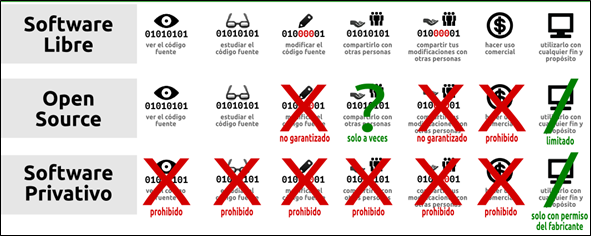

Software Libre - Software de Código Abierto (Open Source)
En 1998, algunas de las personas de la comunidad de software libre empezaron a usar el término «software de código abierto» (del inglés «open source software») en vez de «software libre» para describir lo que hacen. El término «código abierto» se asoció rápidamente con una aproximación diferente, una filosofía diferente, valores diferentes, e incluso un criterio diferente por el cual las licencias son aceptables. El movimiento por el software libre y el movimiento por el código abierto hoy son movimientos separados con visiones y metas diferentes, aunque podamos y trabajemos juntos en algunos proyectos prácticos.
La diferencia fundamental entre los dos movimientos está en sus valores, sus formas de mirar al mundo. Para el movimiento por el código abierto, el asunto sobre si el software debiera ser de código abierto es una cuestión práctica, no ética. Como alguien dijo, «el código abierto es una metodología de desarrollo; el software libre es un movimiento social». Para el movimiento por el código abierto, el software que no sea libre es una solución ineficiente. Para el movimiento por el software libre, el software que no es libre es un problema social y el software libre es la solución.
|
A continuación, se presenta un cuadro comparativo de algunos tipos de software: |
|  |